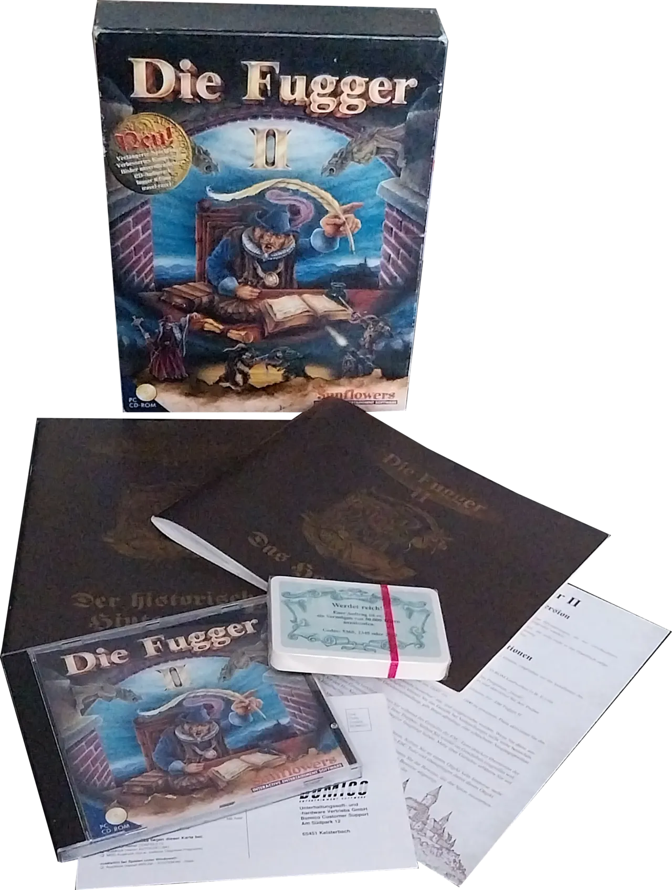
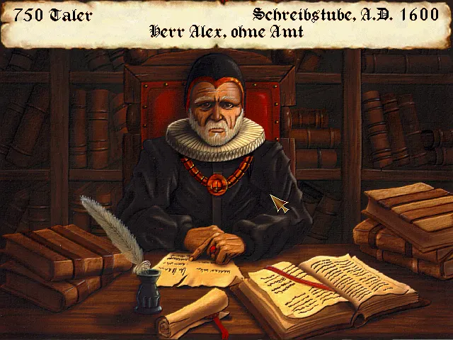
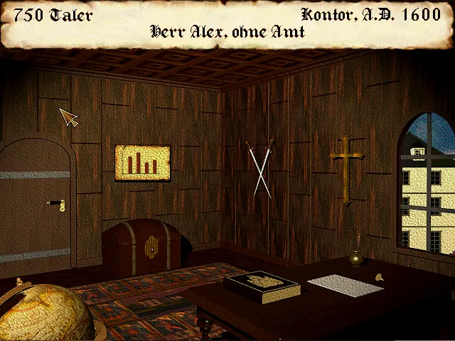
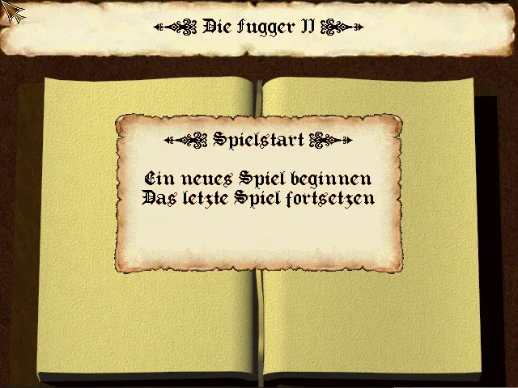

Entwickler: Sunflowers
Publisher: Sunflowers
Genre: Wirtschaftssimulation
Plattform: PC
Erscheinungsjahr: 1996
Die Fugger 2 setzt die klassische Handelssimulation der Serie fort und erweitert das Spielprinzip deutlich um komplexere Produktionsketten, Handelssysteme und politische Einflussmöglichkeiten. Der Spieler baut weiterhin sein Handelsimperium auf, muss jedoch stärker auf Konkurrenz, Märkte und globale Entwicklungen reagieren.




Die Fugger 2 überzeugt durch seine enorme Spieltiefe, komplexe Wirtschaftssysteme und den hohen Anspruch an strategisches Denken. Auch heute noch gilt es als Geheimtipp für Fans anspruchsvoller Handelssimulationen.